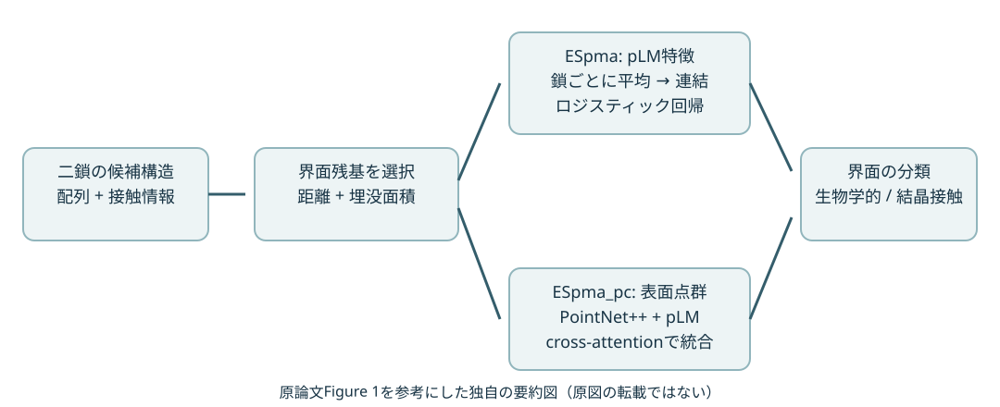
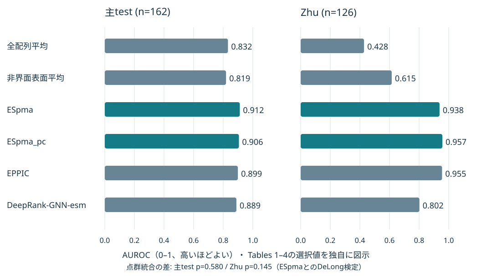

生物学的界面か、結晶接触か
候補構造を入力する界面分類。未知の配列対から結合相手を発見するタスクとは評価が異なる。
PAPER RESEARCH · 2026-10-30 JST
A method for assessing biological/non-biological interfaces using point-clouds-based structural features and protein language models
PPIの接触面を点群で表す研究。ただし最大の改善は、言語モデルの特徴を界面残基に絞って読むことから生まれた。
候補構造を入力する界面分類。未知の配列対から結合相手を発見するタスクとは評価が異なる。
主testのAUROC、全配列平均→界面平均。ESM-Cを共通に使った比較。
主test p=0.580、Zhu p=0.145。追加の幾何情報の増益は限定的だった。
複雑なモデルを作る前に、同じ分類器で全長・CDR・実際の界面を比較する設計が参考になる。
出典: 本文 Results / Tables 1–4。最後のカードは抗体研究への本ノートの解釈。
X線結晶構造には、生体内で機能する会合と、結晶格子を作るための接触が混在する。特に大きな結晶接触は、埋没面積や物理化学的特徴が生物学的界面と似るため、接触しているという事実だけでは判定できない。従来はPISAのような構造・エネルギー情報や、EPPICのような進化情報、DeepRank系の深層学習が用いられてきた。
pLMは各残基を周囲の配列文脈を含むベクトルへ変換するが、全配列を平均すると界面の信号が薄まる可能性がある。そこで著者らは、局在化そのものの効果と、追加の形状表現の効果を比較した。負例も実際に結晶内で実現している接触なので、無作為な非相互作用配列対とは異なる評価になる。抗体設計では、予測複合体の界面特徴をどう集約するかを考える上で参考になる。本文 §1, §4.1
構造情報は二段階で使える。第一は界面を選ぶための位置情報、第二は曲率や局所化学環境を学習するための表面情報である。ESpmaでは第一段階だけを使い、構造で選んだ残基について配列由来の特徴を読む。ESpma_pcでは第二段階も追加する。従って「ESpmaは配列だけで動く」と理解すると、推論に必要な入力を取り違える。

原論文Figure 1とMethodsを参考にした独自の要約図（原図の転載ではない）。出典: Nozawa et al., Figure 1。独自SVGのため原図の配色・配置は再現していない。
構造で界面を選ぶ → 凍結pLM → 鎖ごとに平均 → 二鎖連結 → 回帰
界面表面を点群化 → PointNet++系で形状特徴を学習
点群と言語特徴をcross-attentionで統合 → ニューラル分類
| 項目 | 内容 |
|---|---|
| 入力 | 候補界面を含む二鎖の構造と、対応するアミノ酸配列。ASU内または結晶対称操作で得た鎖対が対象 |
| 界面定義 | 鎖間重原子距離8 Å以内の候補接触と、残基の埋没溶媒接触面積BSA約1 Ų以上を組み合わせる。FreeSASAで計算。本文には「at least」と「exceeded」の表記差がある |
| 言語特徴 | 凍結ESM-C 600M最終層。ESM-2 650M、Ankh-baseも同じ比較に使用 |
| 軽量版 | 各鎖の界面残基をmean poolingし、二鎖分を連結。正則化ロジスティック回帰で生物学的界面スコアを出す |
| 点群版 | dMaSIF由来の表面点・形状/物理化学特徴をPointNet++系で処理。FPSと近傍集約を階層的に行い全体をプール |
| 統合版 | 点群特徴と残基埋め込みを初期段階のcross-attentionで対応づけ、ニューラル分類器へ渡す |
| 学習 | pLMは再学習しない。回帰のハイパーパラメータはOptunaでvalidationに基づき選択。正則化係数の最終値は未確認 |
| 損失・最適化 | ニューラルモデルは二値交差エントロピー、Adam、学習率0.001、weight decay 0.0001、batch 24、最大50 epoch。validation lossが10 epoch改善しなければ停止 |
| 推論 | 確率出力と、閾値0.5の二値判定。ドッキング用途での校正済み確率とはみなさない |
点群は原子座標を単に全部並べることと同義ではない。この論文では分子表面上の点に局所的な属性を対応づけ、空間的に近い点をまとめて界面の形状を表す。軽量版は平均後のベクトルに座標や距離を含めず、「どの位置を平均したか」に構造情報を残す。本文 §4.4–4.8
数式で書けば、鎖AとBの界面残基集合をI_A、I_Bとして、
x = concat(mean_{i∈I_A} e_i, mean_{j∈I_B} e_j)
z = b + w_A·mean(e_i) + w_B·mean(e_j); p = sigmoid(z)
となる。残基別の相対スコアはc_i = e_i·w_Aなどで計算できる。ただし実際のlogitへの加算分は各鎖の残基数で割ったc_i / |I_A|であり、切片も残る。この分解は分類器の線形性に関する説明で、残基の結合自由エネルギーや変異効果を直接推定する式ではない。さらに二鎖の連結は順序を持つので、鎖交換時の出力一致は実装で別途検証する価値がある（後者は本ノートの検討事項）。
| 用途 | データと規模 | 分割・注意点 |
|---|---|---|
| 学習・検証 | Baskaranら由来: 生物学的2,829、結晶接触2,921、合計5,750界面 | train/validationは80:20のランダム分割。主testとの鎖配列一致度が30%を超える学習側エントリを除外し、train/validationの6.3%が除去された |
| 主test | Duarteら由来: 前処理後162界面＝81正例＋81負例 | 学習・モデル選択に使わない。EPPIC開発時に用いたデータなので、同法について独立した外部検証とはいえない |
| 追加test | Zhuら: 137構造243界面→鎖対を確定できない8界面除外→235界面→126界面 | 元の学習・検証集合を参照して鎖レベル30%一致度で除外。最終64正例＋62負例。両クラスで鎖配列を多く共有する |
| 補助事例 | Dockgroundの1R0R、1GPW、1F6M | easy/intermediate/difficultの3例。網羅的ドッキングベンチマークではない |
取得元はSBGrid dataset 843。学習ラベルには進化的保存に基づくアノテーションが使われるため、直接の実験測定だけで構成された教師信号ではない。主testは実験的に裏づけられた界面分類を持つ。
比較は全配列平均（baseline1）、界面と同数の非界面表面残基平均（baseline2）、ESpma、PC、ESpma_pc、既存手法。baseline2の表面条件はrASA ≥25%、抽出は3回繰り返し、AUROCの揺れは0.005未満。指標はAUROC、ACC、MCC、感度、特異度で、生物学的界面を正例とする。AUROC差は対応のあるDeLong検定で評価した。配列冗長性を低減しているが、trainとvalidationを相互にクラスタ分割したとは本文に書かれていない。抗体・VHHの件数内訳も未確認である。本文 §4.2–4.3, §4.7, §4.9
以下はTables 1–4の必要な列だけを選んだ要約であり、表全体の転載ではない。AUROC・ACC・MCCはいずれも高いほどよい。p値は各test上でESpmaとAUROCを比較した値。
| 手法（ESM-C系） | 主test AUROC | Zhu AUROC | Zhu ACC |
|---|---|---|---|
| 全配列平均 | 0.832 | 0.428 | 0.460 |
| 非界面表面平均 | 0.819 | 0.615 | 0.563 |
| ESpma | 0.912 | 0.938 | 0.802 |
| ESpma_pc | 0.906 | 0.957 | 0.865 |
| EPPIC | 0.899 | 0.955 | 0.921 |
| DeepRank-GNN-esm | 0.889 | 0.802 | 0.802 |
主testで全配列→界面平均のAUROC差は+0.080、非界面表面→界面平均は+0.093。対応するp値は0.007と0.002である。ESM-2でも全配列0.829→界面0.899、Ankh-baseでも0.812→0.892と同じ傾向が見られた。残基数を減らすだけでなく、対象界面を選ぶことに意味があると読むのが妥当である。
主testのPC単独はAUROC 0.885、感度0.889、特異度0.642。ESpmaの感度0.778、特異度0.914とは判定傾向が違う。ESpma_pcとESpmaのAUROC差は−0.006、p=0.580。Zhuでは+0.019、p=0.145で、いずれも有意差はない。ただし統合版は分類器も違うので、これは構造情報だけを一因子変更した厳密なablationではない。「形状が役立たない」と一般化する根拠にはならない。
Zhuでは同じ配列が異なる接触面に使われるため、全配列特徴では区別しにくい。そこで界面平均がAUROC 0.938を維持することが、局在化の役割を示す強い材料になる。一方、閾値0.5でのACCはEPPICが0.921で、ESpma 0.802より高い。ランキングのよさと、固定閾値での二値判定のよさを区別して読む必要がある。ESpmaとEPPICのAUROC差も有意でない（主test p=0.686、Zhu p=0.419）。

原論文Tables 1–4とFigure 2を参考にした独自の要約図（原図の転載ではない）。出典。横軸はAUROC 0–1、高いほどよい。ROC曲線そのものの再現ではない。
全主Figure 1–4とTables 1–4の本文・キャプションを確認した。Figure 3は残基寄与と疎水性の関係を扱い、同じアミノ酸でもスコアがばらつくことを示す。ただしLeu106の値がキャプション+11.34、本文+11.04と不一致のため、この値をチャートや定量的結論には用いない。補足Figures S1–S7とTables S1–S6は一覧と説明を確認したが、ファイル本体は取得できていない。
native contact再現率とスコアに正の対応。
界面の局在性が残る場合には正の対応。
両モデルとも意味のある相関が失われる。
Figure 4の本文・キャプションを参考にした独自の傾向カード（原図の転載ではない）。出典。相関係数は未確認。
論文が直接示したこと: 構造で定義された界面にpLM特徴を局在化すると、生物学的界面と結晶接触の識別に有効だった。抗体特化モデルでも、親和性推定器でもない。
抗体研究への転用案（本ノートの解釈）: 抗体–抗原予測構造について、全長の平均特徴と、パラトープ/エピトープに限定した平均特徴を、同じ単純分類器で比較する価値がある。CDRだけを機械的に選ぶと、非接触CDRや接触framework残基を誤って扱うため、構造上の接触範囲も対照にする。実験binder/non-binderのデータで抗原単位・配列クラスタ単位の分割を行い、ipTM等の構造信頼度に対して追加の予測価値があるかを調べるとよい。
VHH–抗原なら二鎖設定へ対応させやすいが、通常抗体のH鎖・L鎖と抗原をまとめる方法は検証が要る。同じ界面残基集合を選ぶ複数poseは、軽量版では同じ配列特徴になる。細かな配向差、衝突、水素結合、抗原の状態を区別するには別の情報が必要になる可能性がある。ドッキングスコアとして使う場合は、近いposeの選別と、未知抗原への結合の可否を別々に検証するべきである。
著者が示した範囲・留保
本ノートの評価上の留保
73c8b2b5be05c67154e63051fc2668afc198d2c8。lr_esmc_nr_model.joblib、lr_nr_model.joblib、nr_pc_esmc.pth、nr_pc_esm.pth。ファイル名と推論コードから対応を読み取れるが、全チェックポイントの論文表との完全対応は未確認。実装を読むときの重要点。 predict_ppi_esm_lr.pyは、界面残基を一つずつmaskして特徴を計算するモードを既定にしている。--no_maskingは高速だが異なるforward passになると説明されている。本文Methodsの単純な「最終層埋め込み」だけではこの処理が明確でなく、再現時には学習済み重みと特徴抽出モードの整合が必要である。ESM-C 600Mの一残基は1,152次元、二鎖連結は2,304次元。ESM-2 650Mなら2,560次元で、重みに合うbackboneを選ぶ必要がある。
また、fair-esmとESM-C用のesmは同じimport名を使うため、コードは環境を分けるよう注意している。requirements.txtはfair-esm中心で、軽量推論に必要なFreeSASA等を別途確認する必要がある。点群版はdMaSIFの別途導入も必要。公開コードを静的に確認した範囲であり、モデル実行による性能再現は今回行っていない。
ユーザー指定のESpmaに一致し、点群表現の役割を整理できる一次論文である。2026年9月公開の新着だが、学習上の価値は「単純な対照で複雑化の必要性を測る」点にもある。公式実装、Colab、重みがあり、概念から実装の入口までつなげられる。
High。 PPI表現・界面pooling・点群の役割を対照実験から学ぶのに適している。抗体の実用的なbinder判定が目的なら、抗体特化の外部評価を追加して読む必要がある。
predict_ppi_esm_lr.py、interface_analyzer.py、plm_backend.pyを対応づける。重みを選ぶ前に特徴次元を確認する。ESpma / ESpma_pc / ESM-C / ESM-2 / Ankh / dMaSIF / PointNet++ / biological assembly / crystal contact / FreeSASA / interface pooling / geometric deep learning
ESpma protein protein interaction point cloud、ESM PPI ESPMA point cloud protein interaction、"ESpma" Nozawa github。"10.1002/pro.70790" "Creative Commons"検索で条件を確定できず、原図を保存しない。独自SVGを2点作成。predict_ppi_esm_lr.py、plm_backend.py、interface_analyzer.py、model/piaco2_architecture.py、requirements.txtを確認。固定SHAは上記。"ESpma" site:huggingface.coで専用model/dataset/spaceを発見できず。基盤pLMの重みとESpmaの学習済み分類器は区別した。